Git basics
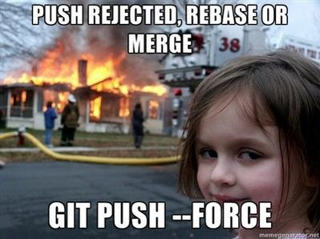git push but don't use the force Luke!
Agenda
- Save time and configure dude
- Baby steps
- Working with topic branches
- Understanding rebase and merge difference
- Hotfixes and security patches
- The dark side of git rebase
Save time and configure dude
vim ~/.gitconfigSome colors, so the status output looks better
[color]
ui = true
[color "branch"]
current = yellow reverse
local = yellow
remote = green
[color "diff"]
meta = yellow
frag = magenta
old = red
new = green
[color "status"]
added = green
changed = yellow
untracked = redEditor and mergetool `apt-get install meld` if you are not vim friendly
[diff]
tool = vimdiff
[merge]
tool = vimdiff
[core]
# gedit if you prefer
editor = vim
# default patterns to ignore, .idea and etc.
excludesfile = ~/.gitignoreUseful rebase behavior
[pull]
# when doing 'git pull', rebase instead of merging
rebase = true
[push]
# 'git push' will push the current branch to its tracking branch
# the usual default is to push all branches
default = tracking
[rebase]
# stash, rebase, pop - since git v2.6.0
autostash = true
[github]
# associate to github account
user = l3pp4rdBaby steps

Ze shell is powerful, use it Luke!
Given we have a git repository
git clone https://github.com/DATA-DOG/godog.git
Reset our master to previous commit and make some changes. We will assume that someone made a commit to master while we were developing
git reset --hard \
$(git log --pretty=oneline | head -n 2 | tail -n 1 | awk '{print $1}')
echo 'datadog' >> README.md
touch newfile
echo 'mod' >> LICENSE
git add LICENSE
git statusYou should see:
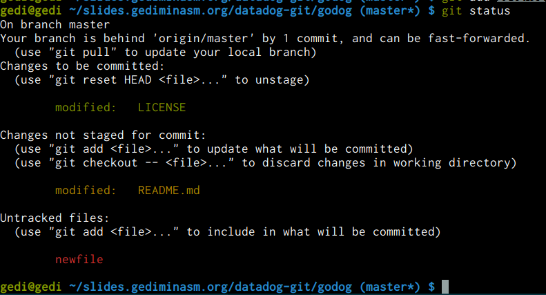If git version is 2.6 or higher and configuration was adjusted as shown before.
Running git pull would:
- git first would check that there are tracked and staged changes, so it would stash it
- git transparently would run git fetch first, to know the origin state
- it would find that origin is ahead by 1 commit and as configured, run rebase.
- then it would stash pop tracked changes
Working with topic branches
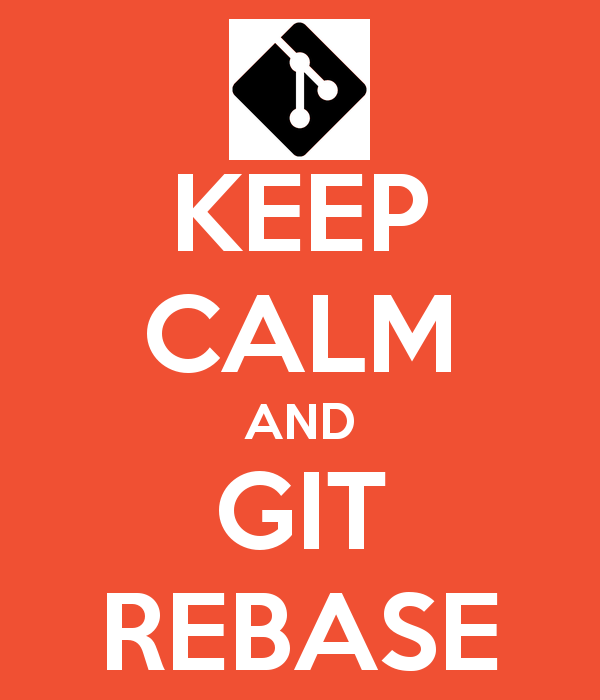Again given we have a feature branch, behind master
git checkout -b feature \
$(git log --pretty=oneline | head -n 2 | tail -n 1 | awk '{print $1}')
echo 'datadog' >> README.md
git commit -a -m 'updated readme'At this stage our feature branch has diverged from master with one commit behind master and one new commit
And Povilas asks us to make a release - merge the feature
We should first, rebase our branch on master:
git pull --rebase origin master
And only then merge - why?
which brings me to another topic...
rebase and merge difference
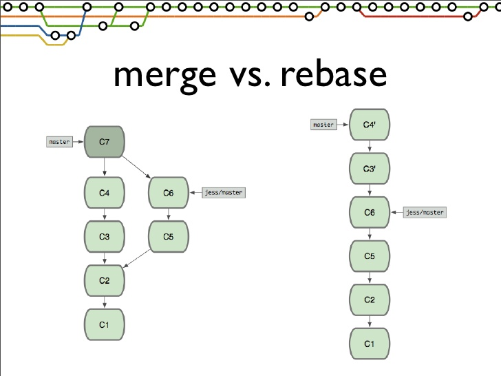An ugly git process example
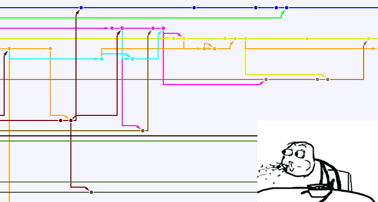A nice git process example
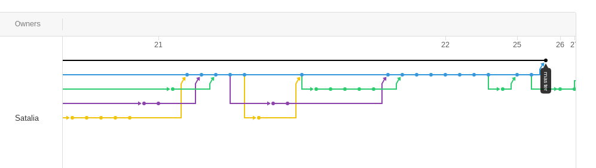The outcome if you have many merge commits in your topic branches
- An ugly history
- A rebase conflict per merge commit in case if you decide to rebase your ugly branch
- Someone ripping your eyeballs out..
merge is good and required, but for.. rebased topic branches or patches
Which brings me to another topic.. hotfixes and security patches
Hotfixes and security patches
Lets take symfony as an example
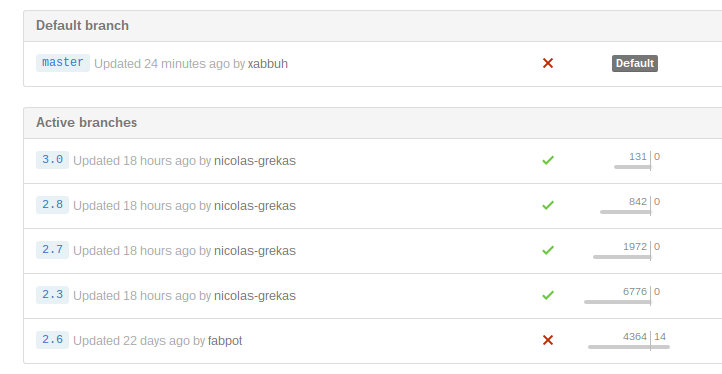Lets say we have found a bug, which was there since the begiging
How to patch all releases with this hotfix?
git clone https://github.com/symfony/symfony.git
cd symfony
git checkout 2.7
echo 'hotfix' >> README.md
git commit -a -m 'security fix RFC434-3465'
git tag -a v2.7.10 -m 'security patch'Merge the patch up to master
git checkout 2.8
git merge 2.7
git tag -a v2.8.3 -m 'security patch'
git checkout 3.0
git merge 2.8
git tag -a v3.0.3 -m 'security patch'
git checkout master
git merge 3.0
git push --all origin # ooopsNow a glipse to remotes, since I cannot push to symfony I'll use my repository
git remote add 'myrepo' 'git@github.com:l3pp4rd/symfony.git'
git push --all 'myrepo'
git push 'myrepo' --tagsAnd for dessert
The dark side of git rebase
How to prevent THIS from reaching your git master
git log --pretty=oneline --abbrev-commitrebase your topic branches
Example
mkdir ~/project && cd ~/project
git init
touch LICENSE
git add LICENSE
git commit -am 'initial commit - set license'
git remote add origin https://github.com/user/project.git
git checkout -b feature/project-bootstrapAfter a while...
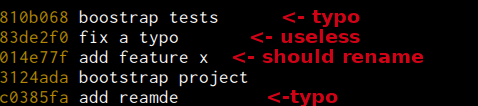Do you want this to go into master production stream?
Lets rebase
Interactively rebase 5 commits from HEAD
git rebase --interactive HEAD~5
At this point we can choose what to do with commits. Rebase will rewind the chosen number of commits and modify them accordingly to prefered changes.
Initially rebase will stop to rename the first commit, we rename it properly:
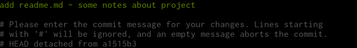Next, rebase will stop on "boostrap project" wich will have two commits squashed
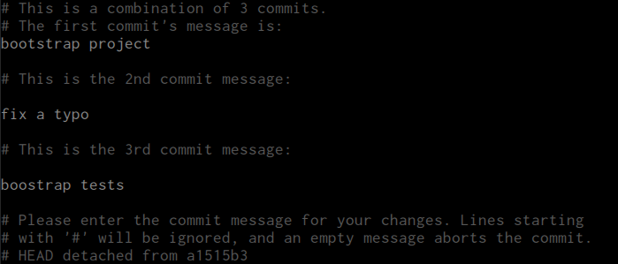Now if we had pushed our commits to git repository in any branch name, we could reference these commits with their hashes. This way it could look like:
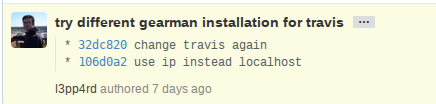Since we haven't, we can just leave those as extra commit messages
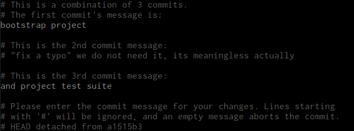Finally, it will stop to rename "add feature x" commit, it is not clear what feature we have added, lets fix it as well:
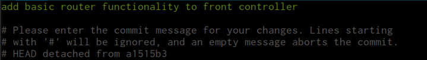When we save and close it, rebase will finish
And instead of...
We have:
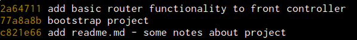Which history log do you choose to see in production?
Before merging it back to master - make sure you are up to date
git fetch
git rebase origin/masterThere are cases, when you may want to split a commit, consider a situation:
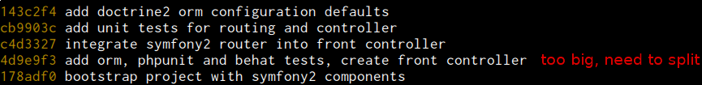So what we should do ? - rebase!
git rebase -i HEAD~4Set edit for commit, which we want to split
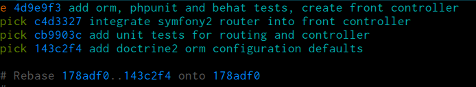Rebase will rewind, pick the commit for edit and pause. Now lets reset one commit from the current HEAD
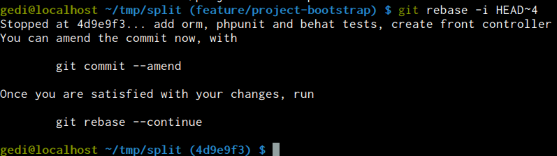git reset HEAD~Lets see what we have in staging area:
git statusAdd the first commit, which includes doctrine2 orm. We will use git add --patch so we stage only a specific change.
git add --patch composer.jsonHit e to edit hunk
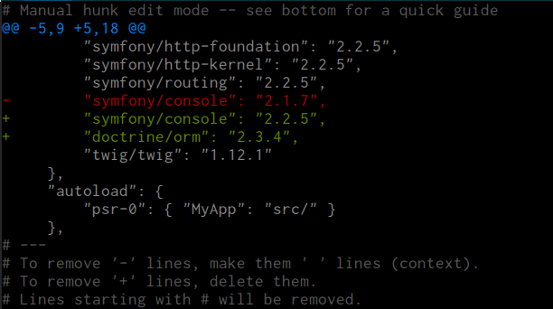Now save and close it. We should have only needed changes staged.
git commit -m 'include doctrine2 orm into project'Next, we have a front controller integration:
git add src/MyApp/FrontController.php public/*
git commit -m 'create front controller'Further more, lets commit phpunit
git add phpunit.xml.dist testsAnd again patch a composer.json change:
git add -p composer.jsonHit e to edit hunk
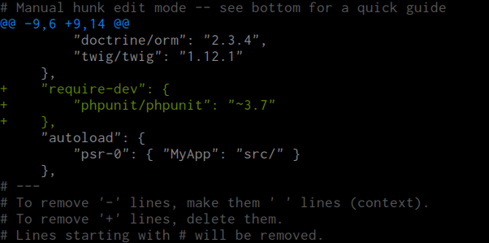Now save and close it. We should have only needed changes staged.
git commit -m 'bootstrap phpunit tests'And finally we have only behat stuff left.
git add features composer.json
git commit -m 'bootstrap behat mink functional tests'
git rebase --continueThats it! Now we have:
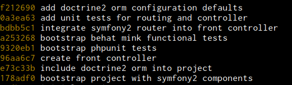